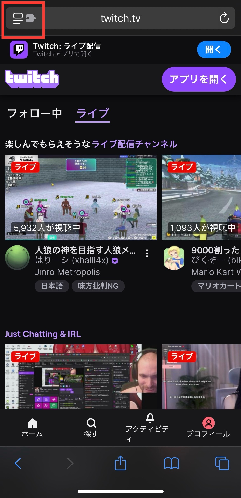
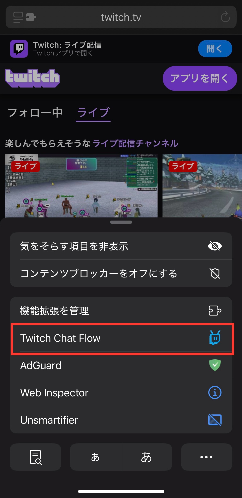
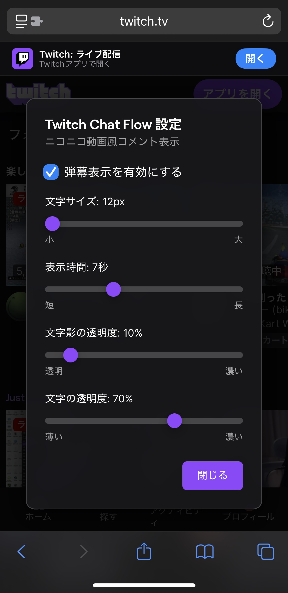
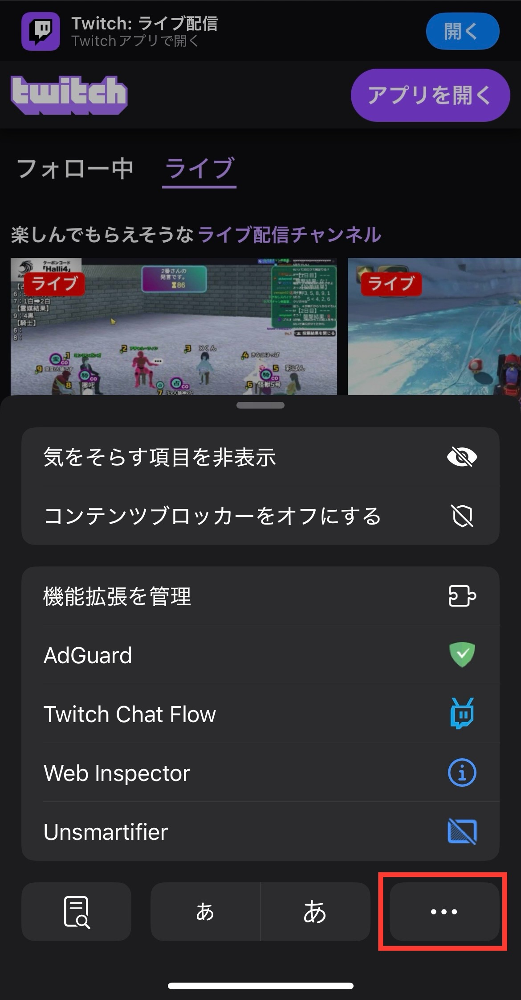
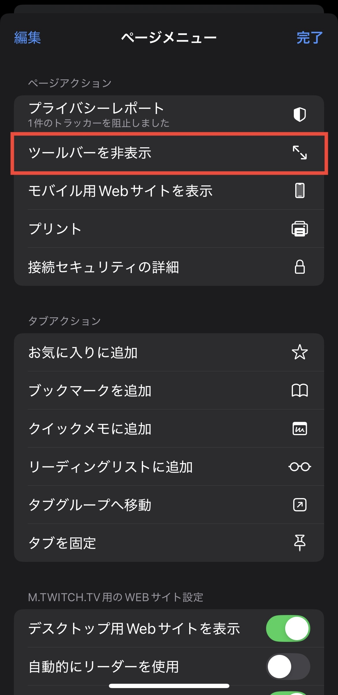

使い方のコツ
基本的な使い方
手順1: アドレスバーの左側にある拡張機能アイコンをタップ

アドレスバー左側のアイコンをタップ
手順2: 拡張機能リストから「Danmaku Flow Chat」のアイコンをタップ

「Danmaku Flow Chat」をタップして設定画面を開く
手順3: 設定を調整して「閉じる」をタップ

好みに合わせて設定を変更したら「閉じる」をタップ
完了: これで弾幕表示の設定が完了です！
- 文字サイズや表示時間を好みに合わせて変更できます
- 配信画面を横向きにすると弾幕がより見やすくなります
- 設定はいつでも同じ手順で変更可能です
アーカイブでコメントを見るには？
手順1: アドレスバーの左側にある拡張機能アイコンをタップ
アドレスバー左側のアイコンをタップ
手順2: 拡張機能リストから「Danmaku Flow Chat」を確認

拡張機能一覧で「Danmaku Flow Chat」が表示されます
手順3: 「...」メニューから「デスクトップ用Webサイトを表示」を選択

メニューから「デスクトップ用Webサイトを表示」をオン
完了: デスクトップ版Twitchではアーカイブのチャット履歴が表示されます
なるべく大画面で見るには？
手順1: アドレスバーの左側にある拡張機能アイコンをタップ
アドレスバー左側のアイコンをタップ
手順2: 拡張機能リストから「Danmaku Flow Chat」を確認
拡張機能一覧で「Danmaku Flow Chat」が表示されます
手順3: 「...」メニューから「ツールバーを非表示」を選択

メニューから「ツールバーを非表示」を選択
完了: 画面上部のツールバーが隠れて視聴エリアが広がります